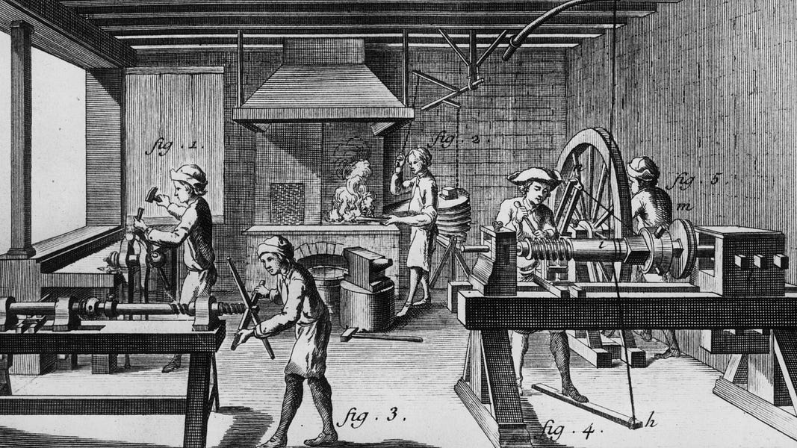
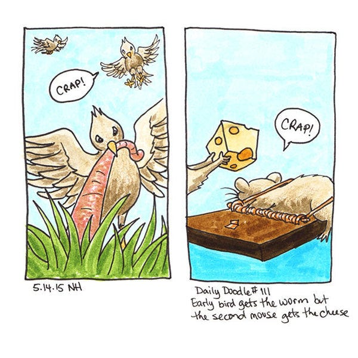
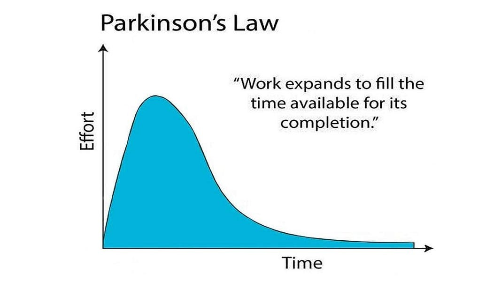
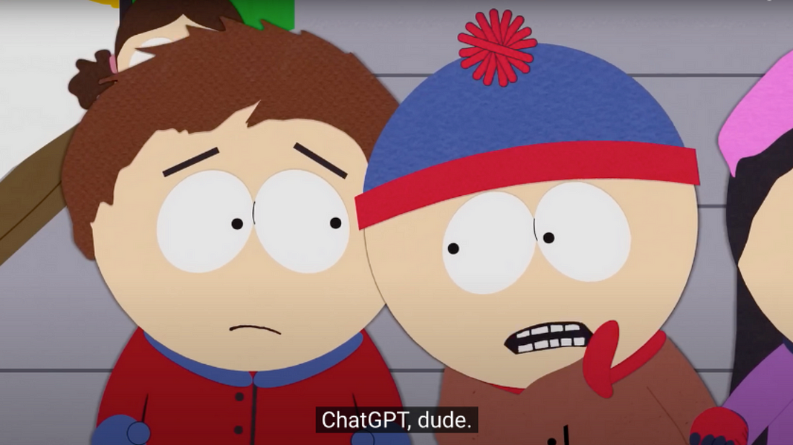
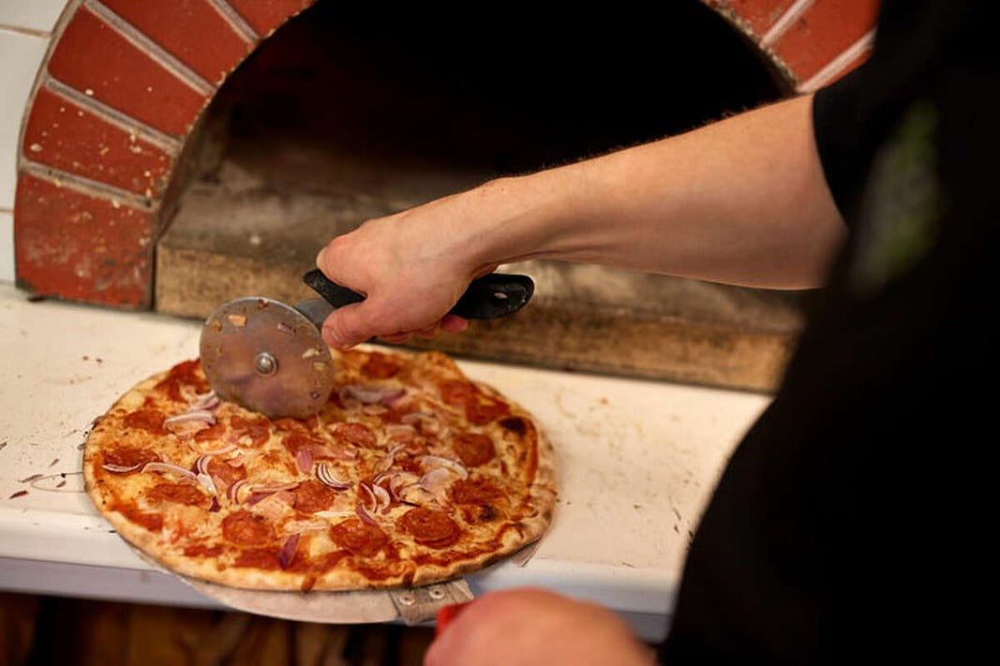

Embrace Your Inner Eccentric: 20 Ways for Improving Productivity
This article provides 20 actionable tips to increase productivity.

Picture the Industrial Revolution, a time of unprecedented economic growth and productivity, where the cogs of ingenuity and innovation turned the wheels of progress. Imagine yourself as the protagonist of your very own productivity revolution, as you embark on this journey through the tips in this article. In this article, you’ll find 20 tips that can potentially help you live an internal industrial revolution, or in business terms, increase your Total Factor Productivity (TFP); how much you produce -output- versus what you need to spend -input- to achieve that result.
Looking for a good way to remember TFP? Just listen to this song but change the lyric to TFP instead. So anyways, try the following ideas as procrastination medicines. No prescription needed and no side effects! Like the ‘good old times’.
1. Are you a “mouse” or a “bird”? 🐦
“the early bird gets the worm”
“the second mouse gets the cheese”
Which of the two you can relate to the most? In other words, identify the time of day when you’re at your most energetic, alert, and ready to tackle the world. Use these peak hours to conquer your most important tasks, and leave the less critical ones for your off-peak periods. To discover your peak hours, pay attention to your energy levels throughout the day and notice when you feel most engaged and creative.

2. Make your task a challenge ⏳
Work expands to fill the time available for its completion- this phenomenon is known as Parkinson’s Law. In other words, if you give yourself all day to complete a task, you’ll take all day to do it, if you give yourself 3 days, it will take 3 days! To combat this, set yourself tight but achievable deadlines, and watch as your efficiency skyrockets. To overcome this, set tight but realistic deadlines for yourself to create a sense of urgency.
By treating tasks as challenges, you’re more likely to stay focused and work efficiently to meet the deadline. It’s important to strike a balance between pushing yourself and setting achievable goals to maintain productivity and prevent burnout.

3. Silence the Distraction Goblins 🚫
Picture your notifications as pesky little goblins that wreak havoc on your productivity. Mute them, and designate specific times to check your messages and social media. By doing this, you’ll minimize interruptions and create an environment that fosters productivity. Remember, most messages and notifications can wait, and your work efficiency will improve when you’re not constantly shifting your attention between tasks.
4. Delegate/automate 🫵
To determine which tasks are best suited for delegation, consider your core competencies, strengths, and weaknesses and take those factors to calculate your opportunity cost. Focus on tasks that you are good at doing or that require your unique expertise while delegating tasks that feel more time-consuming and others can perform efficiently. By doing so, you’ll free up time and mental bandwidth for more critical tasks. When delegating/automating, ensure you provide clear instructions and set expectations, so the executor understands the desired outcome and can perform the tasks effectively.

If you are a student right now who lives abroad you can probably relate. Delegating tasks frees up a lot of time. If you do not live with your parents now, you do not have your mom doing the laundry for you. You have to do it by yourself. Not just laundry, but everything.
5. Sleep 🛌
Sleep is crucial to maintaining your energy levels, focus, and overall mental and physical health. Sleep deprivation can negatively impact your productivity, making it harder to complete tasks efficiently and effectively. Establish a consistent sleep schedule, aim for 7–9 hours of sleep per night, and create a relaxing bedtime routine to help you wind down. By prioritizing sleep, you’ll set yourself up for success and increased productivity during your waking hours.
6. Cold water ❄️
Exposing yourself to cold water, such as taking a cold shower or splashing your face with cold water, can instantly wake you up and increase your alertness. It also increases dopamine levels by 250% couple of minutes after. This is crucial because when you keep your levels of dopamine in a satisfactory level, the likelihood of escaping with procrastinating activities (i.e. social media scrolling, cooking for hours) decreases. Alongside, cold water triggers your body’s fight-or-flight response, which increases your heart rate, oxygen intake, and overall energy levels. As a result, your will power to increases therefore productivity goes up!
7. Books? Who Needs ’Em! 📚
Swap those dusty old tomes for summary videos on YouTube, audiobooks, or even podcasts; To be clear, I don’t mean it like Pink Floyd do. Those alternative formats allow you to digest the same information in a more engaging and accessible way, perfect for our modern, fast-paced lives. Additionally, engaging with multimedia resources can cater to different learning styles and keep you more invested in the content. If a topic sparks your interest, delve deeper into it using a variety of online sources to enhance your understanding and learning experience. The story of Salman Khan was one of the early stories that showed the potential of digital education that facilitated the transition to today’s digital learning alternatives.
Salman Khan was born on October 11, 1976, in Metairie, Louisiana. Salman is of Bengali descent, with his father hailing from Barisal, Bangladesh, and his mother from Kolkata, India. In 2003, after his undergraduate and graduate degrees, he started working as a financial analyst at Connective Capital Management in California.
In 2004, Salman began tutoring his cousin in mathematics remotely using Yahoo Doodle and telephone calls. As more family members sought his tutoring, he started creating educational videos and uploading them on YouTube. These videos gained popularity and caught the attention of people outside his family. As the popularity of his videos grew, Salman realized that this alternative method of teaching had the potential to reach a larger audience and make learning more accessible. In other words, Salman's supply created demand which then created more supply and then more demand.
So then, Salman went ahead and created an online educational platform and called it Khan Academy. In 2009, Sal Khan decided to quit his job and focus full-time on building Khan Academy. Khan Academy now offers thousands of free educational videos and resources covering a wide range of subjects, including math, science, history, and more. The platform has helped millions of students worldwide by providing an engaging and accessible alternative to traditional textbooks and classroom lectures. The success of Khan Academy is a testament to the power of alternative learning methods and the positive impact they can have on students' education.
8. Set the mooood 🐮
Utilize productivity apps, take walks, listen to specific playlists, or even ambient noise generators that help you focus and stay motivated. Tools can create an environment conducive to productivity, allowing you to concentrate on your tasks and maintain momentum throughout the day. Experiment with different options to find what works best for you. Keeping an open mind when it comes to trying new methods helps. By establishing a working atmosphere tailored to your needs, you can boost your productivity and maintain consistent progress on your tasks.
9. Why you do stuff? 🤷♂️
Understand WHY are you doing what you are doing. If it makes you feel purposeful, and you can rationalize it then it gives you more reasons to work for your goal. The fastest you can get to the bottom of it, the fastest you stop doing whatever does not matter much and double down on your targets. Also, it is most likely for you to enjoy the effort as well which it will make you more keen on working for your goals.
A good way to understand what you value the most is the wheel of life. From there you can break down and see why you want to improve what you want to improve and you can start building up goals around it. Besides that, there are multiple coaching tools online that can help you better identify and sufficiently justify your purpose.
10. Intrinsic Vs Extrinsic Motivation: Combat overjustification
Use intrinsic motivation. Extrinsically driven motivation can make the effort end up feelilng like a chore, where pure love on the process will keep you going even when the going gets tough. So internalize the motive, make yourself love the effort process not just the rewards.
In a 1973 study by psychologists Lepper, Greene, and Nisbett, children aged 3–5 were divided into three groups for a drawing activity. The first group was promised a "Good Player" ribbon as a reward, the second group received an unexpected reward, and the third group received no reward. Initially, all children showed high intrinsic interest in drawing.
After several weeks, the children were observed during free playtime. Those who promised rewards were significantly less likely to draw compared to the other groups. This study demonstrates that introducing external rewards can lead to the overjustification effect, diminishing a person's intrinsic motivation to engage in an activity they previously enjoyed.
11. Two+ Birds, One Stone 🐦🐦
Grouping similar tasks together and completing them in a single, focused time block. This approach minimizes the time spent transitioning between tasks and helps you maintain momentum. For example, prepare all your meals for the week in one cooking session or respond to all your Facebook messages at once. Batching not only streamlines your routine but also reduces mental clutter, enabling you to concentrate better and accomplish more in less time. Another example is going clubbing 6 days in a raw - that’s how you get sick of it and you never go again so you don’t waste your time ever again 😏
12. Money, Money, Money 💸 link
Gaining a solid understanding of personal finance and learning how to manage your money effectively is key to achieving your goals. Start by creating a budget to track your income and expenses, and identify areas where you can cut costs or make financial decisions that maximize your utility. Use excel spreadsheets to budget your monthly expenses for example is a good way to keep track.
Having control over your finances will help you avoid unnecessary stress and distractions, allowing you to focus on your priorities and make the most of your time and energy.
13. Just DO it ✔️
Mainstream tip that just fits here. It’s better to complete a task well than to be paralyzed by the pursuit of perfection. Striking a balance between high quality and getting the job done will keep you moving forward. Striving for perfection though can often lead to procrastination and endless tweaking, which ultimately hinders progress and wastes YOUR time.
The Spruce Goose, officially known as the Hughes H-4 Hercules, was a massive flying boat aircraft designed and built by Howard Hughes and his team during World War II. It was meant to serve as a transport aircraft for troops and supplies, and it was constructed primarily from wood due to wartime restrictions on aluminum. In 1942, the US government allocated to Hughes a budget of $18 million to build this aircraft for WW2.
While the original contract called for a two-year development period, it took over five years for the aircraft to be completed. Hughes was a perfectionist, and his relentless pursuit of an ideal design led to numerous delays and budget overruns. By the time it was finally built, the war had already ended, rendering the original purpose of the Spruce Goose obsolete.
The Spruce Goose made only one short flight in 1947, piloted by Hughes himself. After that, it never flew again. The massive aircraft became a symbol of Hughes's perfectionism and the consequences of prioritizing perfection over practicality.
This example demonstrates that in some cases, the drive for perfection can lead to significant delays, increased costs, and even the failure to meet original objectives. In the case of the Spruce Goose, it underscores the importance of balancing ambition with pragmatism and the need to recognize when "done is better than perfect."
14. Treat your goals like pizza 🍕
Once the pizza comes out of the oven, it’s complicated to eat, unless you slice it. Set a big nice tasty goal, then break it down into smaller, manageable pieces or tasks. For instance, if you never run before, and your ultimate goal is to run a marathon, start by running around the block, then gradually increase your distance over time. Tackling smaller challenges builds momentum, boosts confidence, and makes the overall objective feel more attainable.

By focusing on every piece each time, you’ll stay motivated and maintain a sense of accomplishment, paving the way to successfully reach your larger pizz… ehm goal.
New Zealand mountaineer Sir Edmund Hillary and Nepalese Sherpa Tenzing Norgay had the ambitious goal of being the first to reach the summit of Mount Everest, the highest point on Earth. Climbing Mount Everest, the highest peak in the world, was an enormous goal, one that had claimed many lives during previous attempts. However, the two men decided to take on the challenge.
The two men, broke it down into smaller steps, planning their expedition meticulously years in advance. Training was one of the initial small goals — both men spent years conditioning their bodies for the extreme altitude and physically demanding climb. They also familiarized themselves with the specific equipment needed for the climb, another mini-goal.
Finally, on May 29, 1953, after overcoming countless challenges and hardships, Hillary and Norgay achieved their ultimate goal — they stood together on the summit of Mount Everest at 28,210 feet (8,598 meters). From the day they started, it took them 16 days to reach to the top.
This historic achievement was not the result of a single, enormous leap, but rather a series of smaller, measured steps. The story of Hillary and Norgay demonstrates the power of breaking a massive objective into smaller, manageable goals, and it's a testament to the power of human determination and resilience.
15. Stay organized 📋
This, for all aspects of your life, helps you streamline your workflow and improve efficiency. For example, use Google Drive to store and organize all your photos and videos, ensuring easy access and a clutter-free device. Keep a designated notebook for jotting down thoughts and ideas, so you always know where to find them. Create a filing system for important documents and a shared calendar for family events and appointments. By implementing tailored systems for your specific needs, you’ll save time, reduce stress, and make your daily tasks more manageable, ultimately enhancing your productivity.
16. Know where your stuff is 📦
The average person spends about 2.5 days per year looking for misplaced items, which adds up to nearly six months over a lifetime! Establish designated spots for frequently used items, such as keys, wallet, and phone, so you always know where they are. But that might not even work for you who knows; I dont know how to do it but figure it out. You can even buy airtags even if you don’t trust yourself. By knowing where your things are at all times, you’ll save valuable time and reduce stress, ultimately boosting your productivity; Get good at it, or at least try to beat the average.
17. Change Scenery 🌳
A change in environment brings fresh perspectives, stimulates creativity, and helps prevent burnout. Different surroundings can inspire new ideas and keep your mind engaged, making it easier to focus on tasks at hand. Whether it’s working from a coffee shop, a park, or simply moving to another room in your home, changing your workspace can help you stay motivated and maintain a steady workflow.
18. Team Up for Accountability 🤝
If you want to stay accountable while reaching your goals, why not band together with a group of like-minded friends or colleagues? It’s high time you all join forces, forge an alliance, and turn your individual aspirations into a common challenge. By forming an accountability group, you can share progress, laugh at each other’s blunders, exchange feedback, and celebrate milestones together. This camaraderie not only keeps you motivated but also transforms the journey toward your goals into a fun and entertaining adventure. Teamwork makes the dream work!
During a study session in the spring semester, my friend and I realized the increasing difficulty of our course load. Our productivity was slipping due to our late morning routines, which often had us waking up around 11 am.
To break this habit, we decided to create the following challenge: each of us had to wake up, switch on the lights, stand up, and send a selfie to the other person before 7.30 am as a proof of wake up. That would earn a point per time. Failing to do so would result in a loss of point and an obligation to buy the other person a meal from the infamous Pennsylvanian chain Wawa. We set this challenge to run from the beginning of February till Easter.
To our delight, the experiment was a success! We both managed to adjust our schedules and improve our productivity, only missing the deadline once each by mere minutes. This challenge not only taught us the power of accountability but also enhanced our will power.
19. Try to work remotely 💻
On average, people in the U.S. spend around 27 minutes one-way commute. That equates to roughly 4.35 hours per week and 226 hours per year! And that’s only one-way! Moneywise they spend around $4,500 annually on their work commute such as fuel, public transportation, and vehicle maintenance (Jerry). Factor in the opportunity cost as well and the cost goes even higher. Working remotely can significantly boost your productivity, as it often saves a considerable amount of time spent commuting. By eliminating travel time, you can dedicate those extra hours to accomplishing more tasks or even striking a better work-life balance.
Additionally, remote work allows for a flexible schedule and the freedom to create a personalized, distraction-free environment that caters to your individual needs. Consider exploring remote work options to enhance your efficiency and make the most of your day.
Click here to watch Wall Street Journal stretching it out this point a bit.
20. Be decisive
Fail fast and re-evaluate. Pondering too much wastes time, especially when you expect no substantial additional information to be added to your dilemmas. So reduce your decisions during the day so you can focus your brain resources in combating the important dilemmas, and once you choose something commit to it. Only then you will find out if the decision was good or bad. Not deciding costs more.
For instance, look at the French and English government between 1933 and 1939. Indecisiveness gave some time for the problem to find some steroids.
In 1975, a Kodak engineer named Steven Sasson invented the world's first digital camera. This disruptive technology had the potential to completely reshape the landscape of photography, shifting the focus away from traditional film. However, Kodak's leadership, was reluctant to embrace this new technology then for fear it would undermine their core business.
This indecisiveness crippled the company in the long run. As Kodak held back, digital technology advanced relentlessly. Consumers gravitated towards digital cameras for their convenience and the cost-saving advantage of not needing film.
Meanwhile, Kodak remained largely on the sidelines. Though they eventually ventured into digital photography, their commitment was half-hearted at best. They continued to pour resources into their declining film business and failed to capitalize on the groundbreaking innovation they had initially spearheaded.
By the time Kodak decided to throw their full weight behind digital, it was too late. Companies like Sony and Canon, who had decisively adopted digital technology and continuously innovated, had already secured dominant market positions. Kodak, once a titan in the industry, declared bankruptcy in 2012.
Kodak’s story sheds a different light on the costs of being indecisive. It has an implication; to identify when stagnancy can lead you to paralysis, and intentionally change routes whenever is appropriate. In other words, regocnise red flags and move on, don’t be like the guy in this video.
Conclusion
As the article comes to an end, you can find yourself reflecting on the remarkable advancements that emerged from the Industrial Revolution. Just as steam engines and mechanized looms revolutionized the way society operated, these tips may potentially inspire you to increase your overall efficiency.
If you reached that far but still finding this useless you just waisted 10 minutes of your life, just saying. At least give it a clap 👏 on medium , and if you find this post helpful clap twice!
For other articles or tips browse through my medium page orgo to my website.